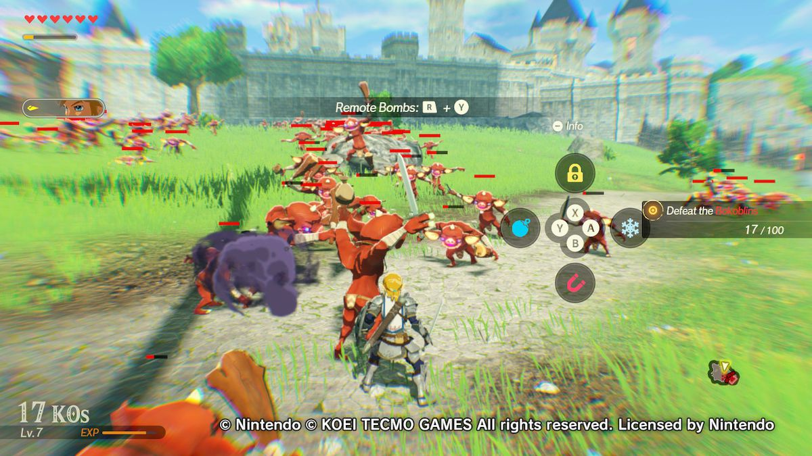

LEGACY
-
In the years since its release, multiple games and developers have cited Breath of the Wild as an inspiration. These include Genshin Impact, Ghost of Tsushima,Immortals: Fenyx Rising,and Telling Lies.
-
Benjamin Plich, designer of Assassin's Creed: Unity and For Honor, said that he believed developers would take inspiration from its focus on experimental gameplay,and PC Gamer wrote that the game "[set] a standard the rest of the genre should live by."
-

In September 2020, Nintendo announced Hyrule Warriors: Age of Calamity, a hack and slash game in the style of Dynasty Warriors series, following 2014's Hyrule Warriors. Age of Calamity's story serves as a prequel to Breath of the Wild, set 100 years before. The game was released on November 20, 2020, on the Nintendo Switch
-

An untitled sequel was announced at E3 2019 for the Switch.[205] It was conceived during planning for Breath of the Wild's DLC; the team came up with too many ideas, some of which could not be implemented due to technical constraints, so they decided to use their ideas for a new game. According to Aonuma, the sequel will build atop the original's world with a new story and gameplay elements.